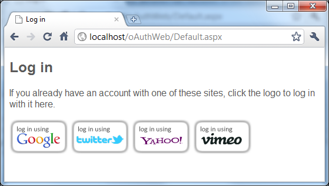
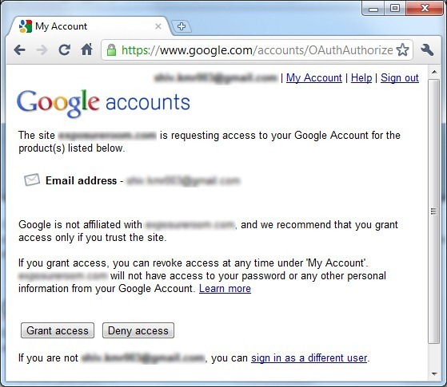
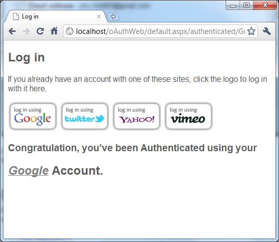
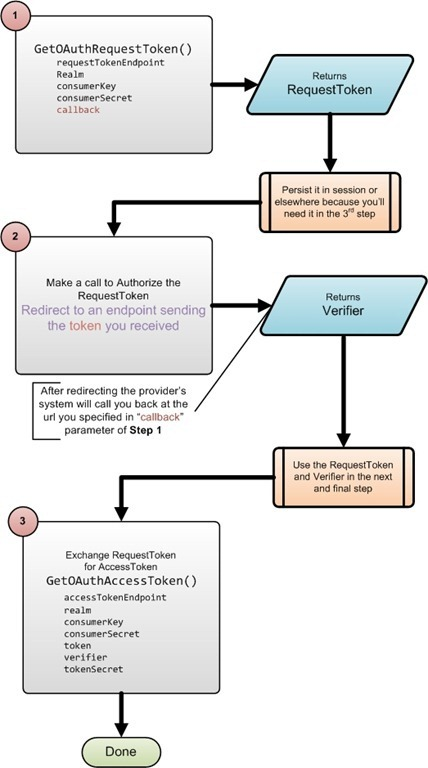

OAuth is a security protocol that enables a user to grant a third-party access to her web resources without sharing her password. OAuth 1.0 was published in December 2007 and quickly become the industry standard for web-based access delegation. Then in June 2008 a minor revision (OAuth 1.0 Revision A) was published, which fixed a security hole in the previous specification.
OAuth 1.0 was based largely on two existing proprietary protocols:
- Google’s AuthSub
- Flickr’s API Auth
At the time (due the combined experiences) it was considered the best implementation of a security protocol for the purposes of authenticating third party applications and granting access to limited secured information of the user.
OAuth is a complex protocol with a lot of to and fro between the relying party (the consumer or third party application) and the provider. As a result there are only a few implementation of the protocol that actually work across multiple providers.
In this post, I'll be presenting you with a C# library that not only works across multiple providers but is also very simple to use and not over engineered like one or two of the other implementations and not so simple that it only works against one provider.
The library presented has been tested against the following providers
- Google – OAuth Reference
- Twitter – OAuth Reference
- Yahoo! – OAuth Reference
- Vimeo – OAuth Reference
The links above point to documentation on each of those sites so I won't repeat that information here as I believe each one presents the process flow pretty well and there is nothing I can really add to that information except to say that you do need to understand it pretty clearly in order to use any library that simplifies the process for you. Because there is a process involved and you have to code against that process.
Yahoo! won't work locally
You can't test against Yahoo! using your development machine or at least from a non routable IP address. All other services listed above do work using a non routable IP or localhost. The reason is that Yahoo! verifies that your request is truly coming from the domain you registered your application for.
I found that working against Google's OAuth provider really cleaned up the library I present here (and where most other libraries fail) because of the tokens and keys Google sends back (which invariably need to be encoded before that can be used). I also believe that Google's design is the worst of the lot (unnecessarily complicated).
For those of you just wanting dive right in and get the code, I've started an open source project on Google code, that houses the source code and a very simple ASP.NET application that will help you hit the ground running in no time flat. You can find the source code and sample project here
I've intentionally kept the code in the sample project really simple so it is easy to grasp how to use the library as well as the sequences of steps involved in the OAuth protocol. Once you understand the process you'll most likely want to re-engineer your application's code for your production systems. The library can be used as is.
The Sample Project
The screen shot below shows the default page of the application. If you've signed up with Google for example, then fill in the consumer key and consumer secret in the appropriate places in the code (there are two places you'll need to do this in – if you don't you'll get an exception, letting you know that that's what you need to do).

Clicking on the Google icon will take you to Google. And Google will present the log in page where you can enter your Google account credentials. The page on Google will also present you with other information as shown below.

Once you grant access you will have completed the process and you'll see the screen shot shown below

OAuth Process
Essentially there are two kinds of application that may need to use OAuth for authentication purposes.
- Web Applications
- Installed Application
The library presented here is for Web Application, however the core code should be usable in an installed application as well since the core code handles all of the encryption/decryption (or hashing really) and other nuances of the protocol itself.
In Web Application (for the purposes of OAuth) we employ what is frequently known as the 3-legged scenario. In word words there are essentially 3 steps to the entire process. It's all explained in the links above.
Getting Started
The very first step is getting a consumer key and consumer secret (also known as the shared secret). You'll need to sign up with a provider and register your domain and application in order to get these. Each provider will provide you with a consumer key and consumer secret that you'll have to use when communicating with their service.
Once you have a consumer key and consumer secret, you'll also you're ready to begin. The sample project has code and the urls you'll need for the 4 providers I listed earlier. If you're working with another provider you'll also need the 3 endpoints (the urls) for each of the steps.
OAuthConsumer.cs
/// <summary> /// Step 1 of the oAuth protocol process /// Make a request with the provider for a <see cref="RequestToken"/> /// </summary> /// <param name="requestTokenEndpoint">The url (as per the provider) to use for making a requet for a token</param> /// <param name="realm">Typically the url of Your "application" or website</param> /// <param name="consumerKey">The Consumer Key given to you by the provider</param> /// <param name="consumerSecret">The Consumer Secret given to you by the provider</param> /// <param name="callback">The url you'd like the provider to call you back on</param> /// <param name="signatureMethod">defaults to HMAC-SHA1 - the only signature method currently supported</param> /// <returns>An instance of a <see cref="RequestToken" /> class</returns> public RequestToken GetOAuthRequestToken(string requestTokenEndpoint, string realm, string consumerKey, string consumerSecret, string callback, SignatureMethod signatureMethod = SignatureMethod.HMACSHA1) { var oAuthUtils = new OAuthUtils(); var authorizationHeader = oAuthUtils.GetRequestTokenAuthorizationHeader(requestTokenEndpoint, realm, consumerKey, consumerSecret, callback, signatureMethod); return MakeRequest<RequestToken>(requestTokenEndpoint, authorizationHeader); } /// <summary> /// Step 3 of the oAuth protocol process /// Make a request on the provider to Exchange a <see cref="RequesToken"/> for an <see cref="AccessToken"/> /// (Step 2 is a simple redirect and so there is no method for it in this class) /// </summary> /// <param name="accessTokenEndpoint">The url (as per the provider) to use for making a requet to Exchange a request token for an access token</param> /// <param name="realm">Typically the url of Your "application" or website</param> /// <param name="consumerKey">The Consumer Key given to you by the provider</param> /// <param name="consumerSecret">The Consumer Secret given to you by the provider</param> /// <param name="token">The token you got at the end of Step 1 or Step 2</param> /// <param name="verifier">The verifier you got at the end of step 2</param> /// <param name="tokenSecret">The tokenSecret you got at the end of step 1</param> /// <param name="signatureMethod">defaults to HMAC-SHA1 - the only signature method currently supported</param> /// <returns>An instance of a <see cref="AccessToken"/> class</returns> public AccessToken GetOAuthAccessToken(string accessTokenEndpoint, string realm, string consumerKey, string consumerSecret, string token, string verifier, string tokenSecret, SignatureMethod signatureMethod = SignatureMethod.HMACSHA1) { var oAuthUtils = new OAuthUtils(); var authorizationHeader = oAuthUtils.GetAccessTokenAuthorizationHeader(accessTokenEndpoint, realm, consumerKey, consumerSecret, token, verifier, tokenSecret, signatureMethod); return MakeRequest<AccessToken>(accessTokenEndpoint, authorizationHeader); }
Code Listing 1: The Two Methods you'll use
The two methods you see in the code listing above are the only two methods you'll use during the process of authenticating the user. The seconds step in the process is a simple re-direct and so there is no method for it in the library per-se. Besides the sample project if you need an explanation of the various parameters, please read the comments provided.

These two methods will get you as far as authenticating the user using an external OAuth service provider. In other words, she is who she says she is. But you don't necessarily have any other information about her. In other words, executing and completing the Authentication process does not inherently provide you with any information about the authenticated user.
To get additional information you'll need to use the AccessToken (given to you by the provider in the 3rd and final step of the OAuth process), and make additional calls against the provider. The core library has the methods and functionality you'll need (at the core level) to make these additional calls.
Each provider has a different endpoint you'll need to use and not all providers have the same API and not all providers will provide the information you'll need about your user either.
Retrieving Additional Information
In the sample application there is a line that has been commented out at the end of the method that will retrieve the user's email address from Google. Of course you can use that only if you're using Google as the provider.
Getting the Email Address
var responseText = oAuthConsumer.GetUserInfo("https://www.googleapis.com/userinfo/email", realm, consumerKey, consumerSecret, accessToken.Token, accessToken.TokenSecret);
Retrieving an Authenticated user's Email Address (Google)
You should be able to write any additional methods you'll need using the code in OAuthConsumer.cs (partial listing in the code listing above) file that pertains to your needs and the specific provider(s) you're using.
That brings us to the end of this post. I truly hope the library and sample project will help you get started and in no time you'll have an OAuth implementation in your production applications.